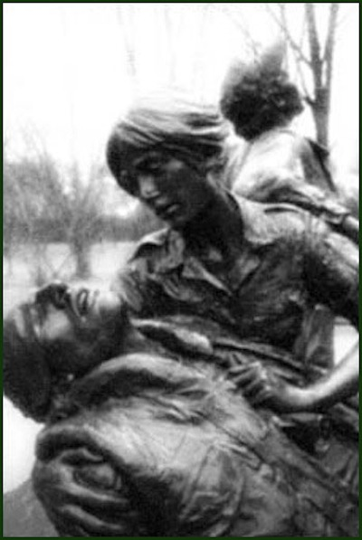

"Who decides who America will remember?" asked Diane Carlson Evans, founder of the Vietnam Women's Memorial Foundation, during the Senate's hearings to build the Vietnam Women's Memorial on the National Mall. There are a lot of answers to this question when considering the Vietnam War — popular culture, veterans groups, and as this site demonstrates, political speech.
This site shows how President Ronald Reagan shaped historical memory of the Vietnam War in the United States. The rhetoric used by Reagan focuses less on the policies and missteps of the war and shifts American attention to veteran sacrifice. However, Reagan, as well as President George H.W. Bush solidifies veteran sacrifice as a male-only experience, and they exclude women from the collective historical memory of the Vietnam War. Because President Bill Clinton had a controversial relationship to the war, he solidifies the rhetoric used by Reagan and Bush in order to look toward the American future.
Although only 10,000 women served in the Vietnam War, female veterans have a unique aspect of their service when compared with male veterans. All women who served in Vietnam did so voluntarily, meaning that they fulfilled civic duty to the fullest extent. The draft complicated men's relationship with the war because men were forced with the decision to go to war or to jail. Because of female veterans' willingness to serve in an unfavorable war, it is worthwhile to look at their place (or lack thereof) in historical memory.